steps
- Sketch your characters or character ideas. Since comic book characters are very much defined by how they look, making a few quick sketches is a great way to inspire yourself to create a unique character and might even give you plot ideas. You can start with pencil, crayon, or even a digital design program depending on what gets your creative juices flowing.
- Practice drawing the characters, locations, and objects that will be in your story. The pros call these "model sheets." The more you practice, the more consistent the drawings will be, making it easier for your reader to "read" your artwork. Making sure you know how each character looks from all angles will help your readers identify them, even if there's a lot of action around them on your pages.
- Practice drawing different facial expressions, postures, and situations for each character. This will allow you to make your characters look smoother and will help you work out the few kinks in your technique. To practice, draw your character with four most important feelings (happiness, anger, sadness, and fear) in five different ways each (mildly happy, kind of happy, happy, very happy, extremely happy, hysterically happy). This is a good way to practice drawing your character's facial traits. Since comic books are full of action, you will also need to draw each character in various action poses.
- Flesh out your key characters. Developing your characters’ backstory and personality is crucial to making a good digital comic book. Even if you choose not to reveal much to the reader at this point (ex. Wolverine), it’s important for you to have a sense of the character’s roots so that you can make their behavior realistic and organic; their past experiences, victories, hurts, and failures should inform their reactions in new situations. If your comic book hero will be a superhero, read How to Create a Super Hero for advice. Otherwise, read How to Create a Fictional Character from Scratch.
- Develop your antagonist/rival/evil person's personality, but don't go too much in depth in the story itself. Over-explaining the antagonist takes away their intrigue (which is why Joker remains so interesting) and dulls the larger conflict of the story. On top of that, since comics have to cover a lot in a limited time, there is no time for the reader to be distracted by someone other than the protagonist. In the example of cartoons like Biowars, the protagonist is actually biology-related, so don't feel compelled to keep your storyline based solely off human or monsters.
- Make the different characters very different physically. If you're a beginner, it will be hard to make specific facial traits to your characters and you don't want your reader confusing your rival and your hero. If your protagonist has short, blond hair, make your rival have long, black hair. If your protagonist wears shorts and a T-shirt, make your rival wear jeans and a lab coat (or anything else). Match your character's attire with their general demeanor, if possible; bad boy clothing, etc. 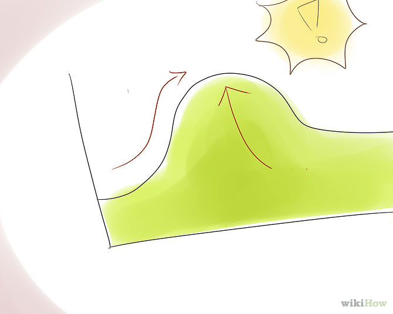 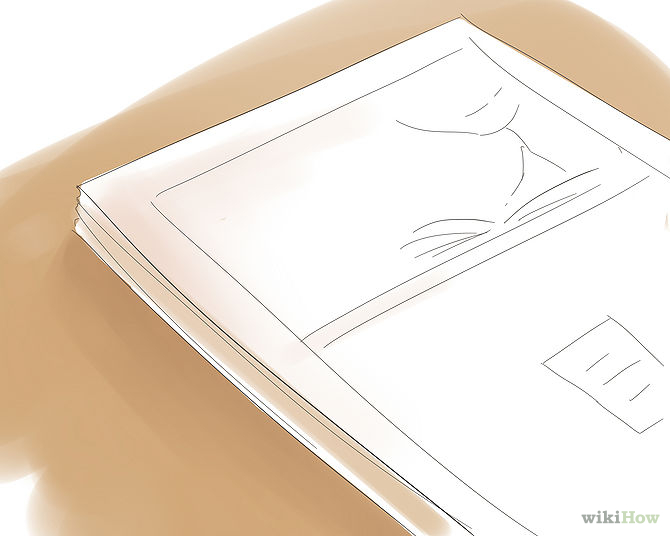 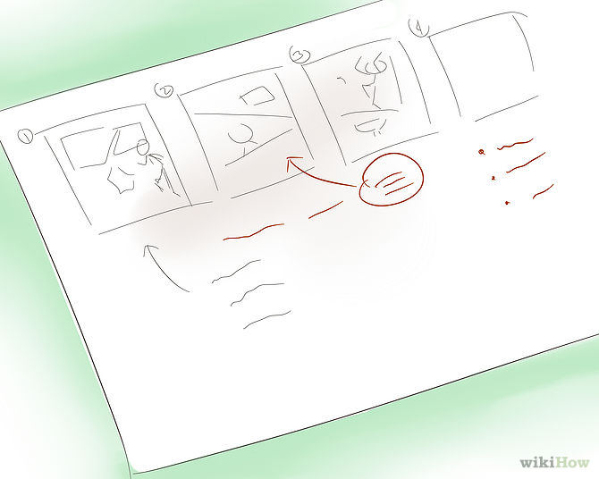 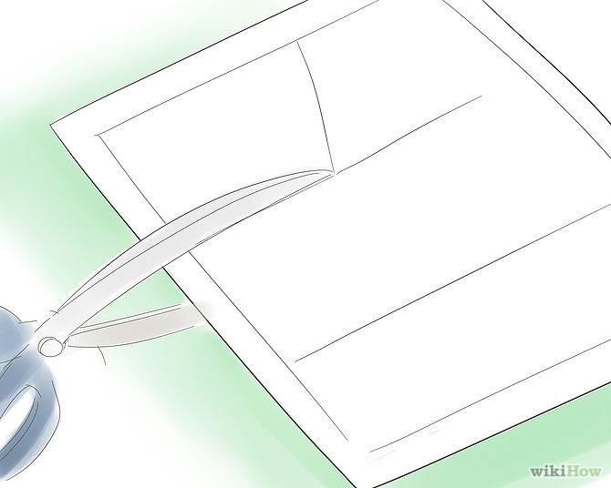 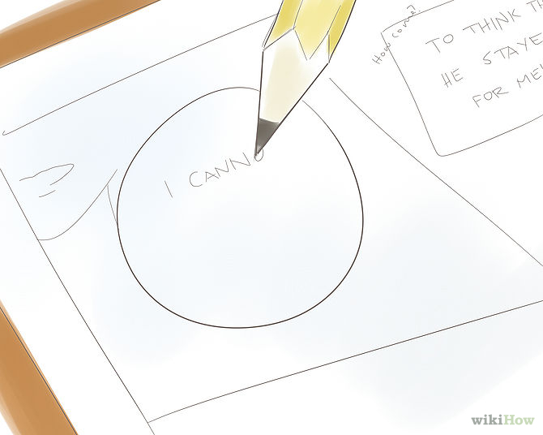 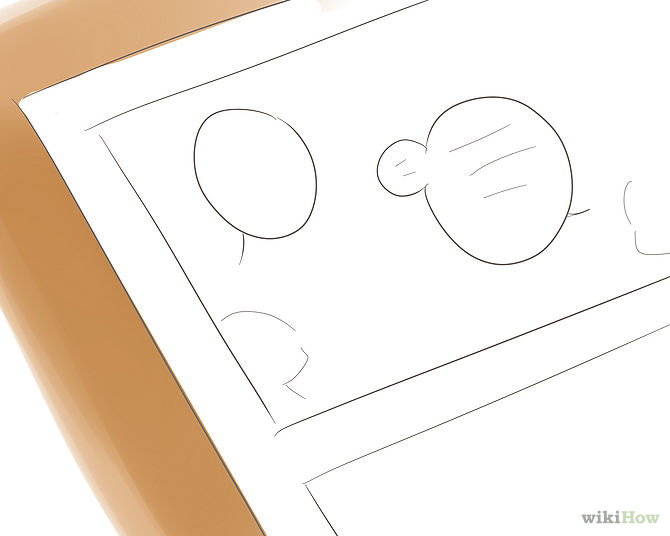
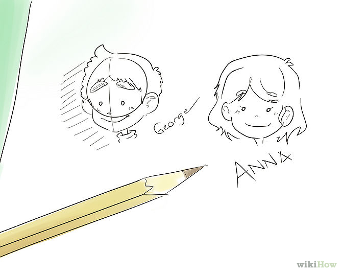
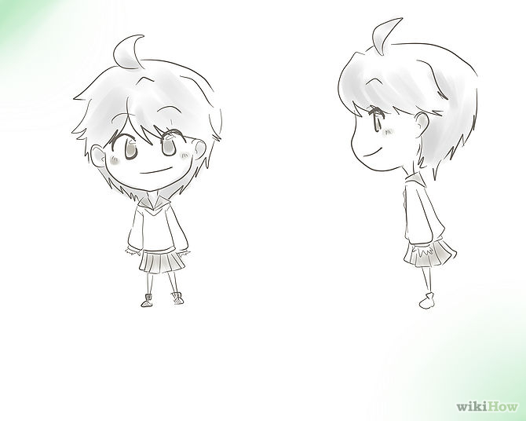
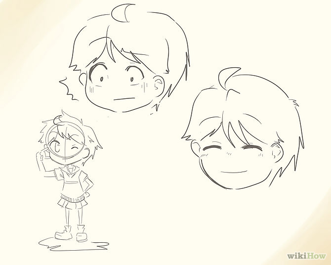
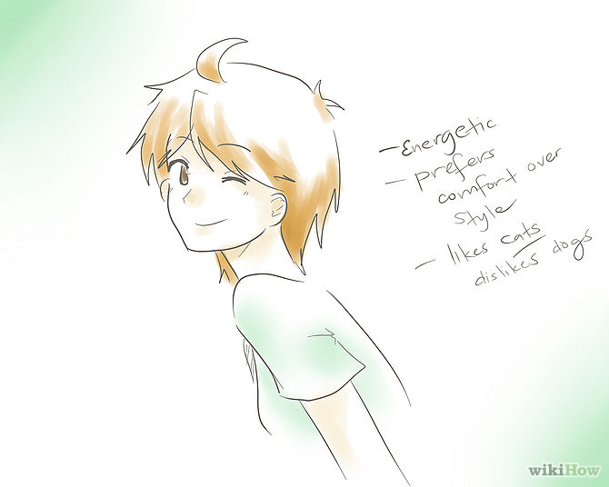
 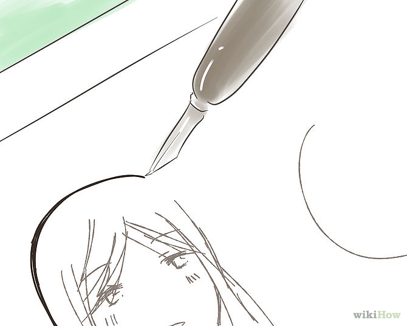
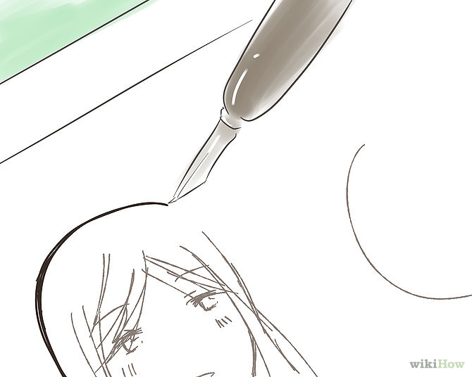